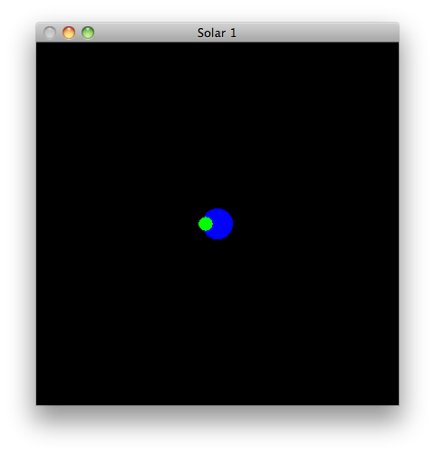
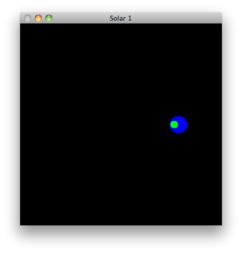
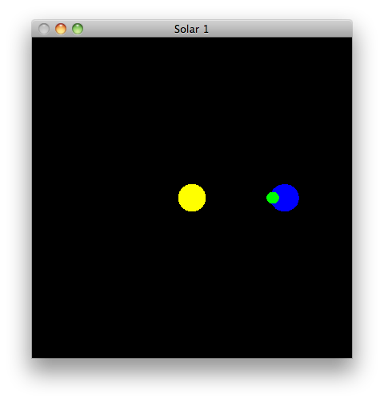

Explore the Perspective projection in the context of the atom/electon animation
Develop a more detailed knowledge of the gluPerspective function
Rework the atom/electron animation into a simple sun/earth/moon rotation sequence
Understand how the entire world could be rotated/translated to simulate the flight of a camera through the model
Explore further the model classes devised in assignment 1 solution
Duplicate the lab05b_transformations project - and call the new project lab06b_perspective
The project may contain these sources here:
[[color.h]]
[[color.cpp]]
[[vector3.h]]
[[vector3.cpp]]
[[utils.h]]
[[utils.cpp]]
[[electron.cpp]]
Build and test
We will switch the projection from Orthographic to Perspective:
Modify setupRC to use this:
//glOrtho (-100.0f, 100.0f, -100.0f, 100.0f, -100.0f, 100.0f);
gluPerspective(60.0f, 1, 50.0, 400.0);
Build and test
You will notice that you seem to be in the nucleus, with the electrons orbiting around you.
This is because gluPerspective sets the initial eye co-ordinates at the origin. To get a full view, we can translate the entire world out along the Z axis. Put this line at the end of setupRC:
glTranslatef(0.0f, 0.0f, -200.0f);
Experiment with the parameters to gluPerspective - trying different values.
Near and far are easy understand, experiment with larger near and smaller far
Fovy and aspect should be experimented with independently.
glTranslatef(0.0f, 0.0f, -200.0f);
...to dynamically change our view of the model, while the animation is in progress.
We do this by intercepting special keys, and changing the transformation depending on some increments based on which key was pressed.
First, register a callback special keys in main:
glutSpecialFunc(specialKeys);
void specialKeys(int key, int x, int y)
{
}
int left=0, right=0;
left = (key == GLUT_KEY_LEFT)? 5 : 0;
right = (key == GLUT_KEY_RIGHT)? -5 : 0;
glTranslatef(left+right, 0.0f, 0.0f);
glutPostRedisplay();
Build and test. You should have the impression that you are swiveling a camera left or right.
Doing the same for up/down, and also for in/out:
int up=0, down=0;
int left=0, right=0;
int in=0, out=0;
up = (key == GLUT_KEY_UP)? -5 : 0;
down = (key == GLUT_KEY_DOWN)? 5 : 0;
left = (key == GLUT_KEY_LEFT)? 5 : 0;
right = (key == GLUT_KEY_RIGHT)? -5 : 0;
in = (key == 9)? 5 : 0; // tab
out = (key == 32)? -5 : 0; // space
glTranslatef(left+right, up+down, in+out);
glutPostRedisplay();
In the above example, we are using tab/space for moving towards/away from the scene.
Build and test
We can no construct an alternative to the atom simulation, based on much the same code.
We want to present an animation of the earth rotating around the sun, and then the moon rotating around the earth.
First, a method to render the earth/moon:
void renderEarthMoon(int moonAngle)
{
glPushMatrix();
Color::Blue.render();
glutSolidSphere(15, 15, 15);
Color::Green.render();
Vector3::UnitY.rotate(moonAngle);
Vector3(30.0f, 0.0f, 0.0f).translate();
glutSolidSphere(6.0f, 30, 17);
glPopMatrix();
}
void renderSolarSystem(void)
{
static int moonRot = 0;
glClear(GL_COLOR_BUFFER_BIT | GL_DEPTH_BUFFER_BIT);
glMatrixMode(GL_MODELVIEW);
glPushMatrix();
renderEarthMoon(moonRot);
glPopMatrix();
moonRot = (moonRot + 10) % 360;
glutSwapBuffers();
}
glutDisplayFunc(renderSolarSystem);

//glTranslatef(0.0f, 0.0f, -200.0f);
//...
Vector3(100,0,0).translate();
//...

//...
Color::Yellow.render();
glutSolidSphere(15.0f, 30, 17);
//...

Finally, we need to put the earth in orbit around the sun.
First, change renderEarthMoon to take an angle increment for the earth:
void renderEarthMoon(int earthAngle, int moonAngle)
{
Vector3::UnitY.rotate(earthAngle);
static int earthRot = 0;
//...
earthRot = (earthRot + 5) % 360;
renderEarthMoon(earthRot, moonRot);
Build and test.
Your final version might look like this:
[[projection.cpp]]
Currently, when you zoom out to far, or in too near, the scene disappears from view.
Experiment with changes to gluPerspectives second two parameters to have the scene keep the scene in view
Create a new project, and incorporate all of these sources. Build and test.
Develop a set of classes to solar system simulation devised in this lab, but based on the model classes in assignment 1 Solution.
Candidate classes:
Sun
Planet
Moon
Develop a simple extension to the model file formal to enable characteristics of the atom(s) to be loaded from our mode file.